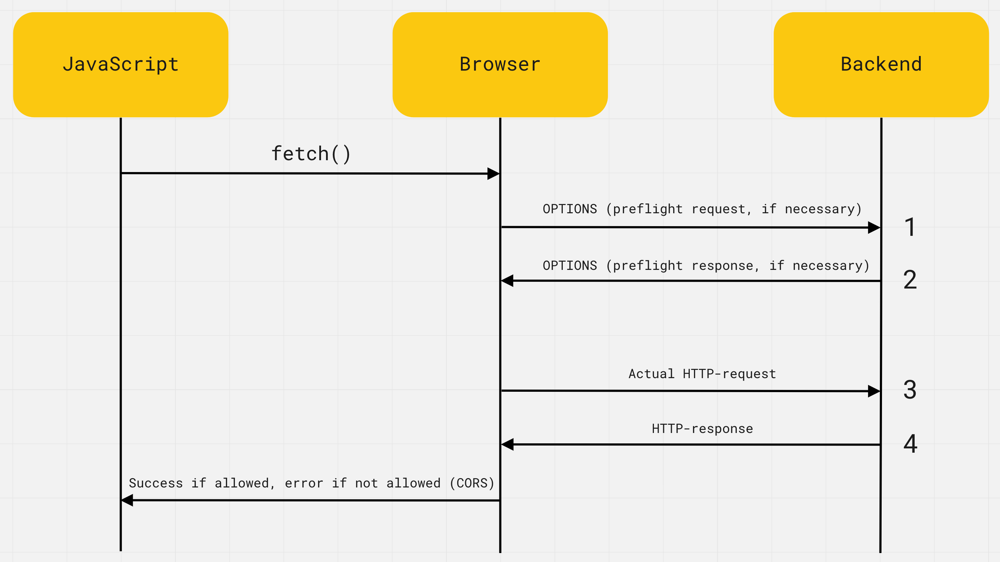

По умолчанию HTTP-запрос можно делать только в рамках текущего сайта. При попытке запроса на другой домен, порт или протокол, то есть выполнить кросс-доменный запрос - браузер выдаёт ошибку. Это сделано из соображений безопасности и права доступа настраиваются на бэкенде. Если бэкенд не поддерживает кросс-доменные запросы, то фронтенд-разработчик ничего не сможет с этим сделать в своем коде.
GET /users
Host: my-api.com
Origin: https://my-site.com
Сервер проверяет заголовок Origin и, если он поддерживает кросс-доменные запросы, добавляет в ответ специальный HTTP-заголовок Access-Control-Allow-Origin.
# Private API
Access-Control-Allow-Origin: https://my-site.com
# Public API
Access-Control-Allow-Origin: *
Значением этого заголовка будет разрешенный источник (Origin). В нашем случае это должен быть один сайт https://my-site.com, если бэкенд приватный, или спецсимвол *, если бэкенд публичный - разрешает делать запросы кому угодно.

То есть браузер это некий посредник между JavaScript-кодом и бэкендом. Он добавляет каждому запросу заголовок Origin с правильным значением и проверяет наличие заголовка Access-Control-Allow-Origin в ответе. Если заголовок есть и его значение подходит, выполнится оригинальный запрос и JavaScript-код получит его результат, в противном случае будет ошибка CORS.